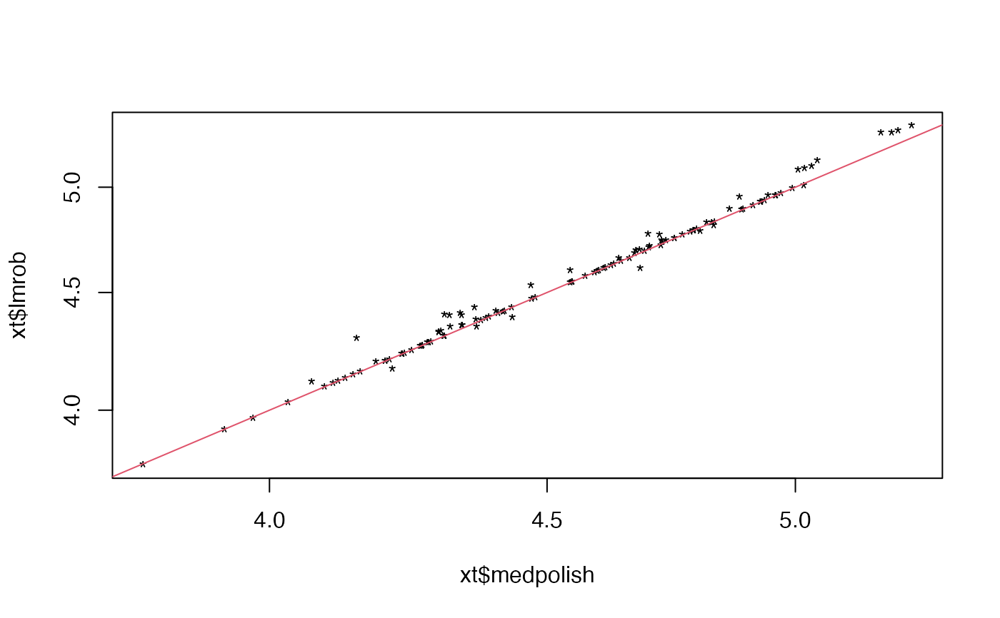

Aggregates e.g. protein abundances from peptide abundances
Source:R/tidyMS_aggregation.R
estimate_intensity.RdAggregates e.g. protein abundances from peptide abundances
See also
medpolish_estimate_dfconfig rlm_estimate_dfconfig
Other aggregation:
INTERNAL_FUNCTIONS_BY_FAMILY,
aggregate_intensity_top_n(),
medpolish_estimate(),
medpolish_estimate_df(),
medpolish_estimate_dfconfig(),
plot_estimate(),
plot_hierarchies_add_quantline(),
plot_hierarchies_line(),
plot_hierarchies_line_df(),
rlm_estimate(),
rlm_estimate_dfconfig()
Examples
dd <- prolfqua::sim_lfq_data_peptide_config()
#> creating sampleName from file_name column
#> completing cases
#> completing cases done
#> setup done
lfq <- LFQData$new(dd$data, dd$config)
lfq <- lfq$get_Transformer()$log2()$lfq
#> Column added : log2_abundance
bbMed <- estimate_intensity(lfq, .func = medpolish_estimate_dfconfig)
#> starting aggregation
bbRob <- estimate_intensity(lfq, .func = rlm_estimate_dfconfig)
#> starting aggregation
#> Warning: 'rlm' failed to converge in 20 steps
#> Warning: 'rlm' failed to converge in 20 steps
nrow(bbMed$data)
#> [1] 116
nrow(bbRob$data)
#> [1] 116
xt <- dplyr::inner_join(bbMed$data, bbRob$data)
#> Joining with `by = join_by(protein_Id, sampleName, group_, sample,
#> isotopeLabel, nr_children_protein_Id)`
plot(xt$medpolish, xt$lmrob, log = "xy", pch = "*")
abline(0, 1, col = 2)
